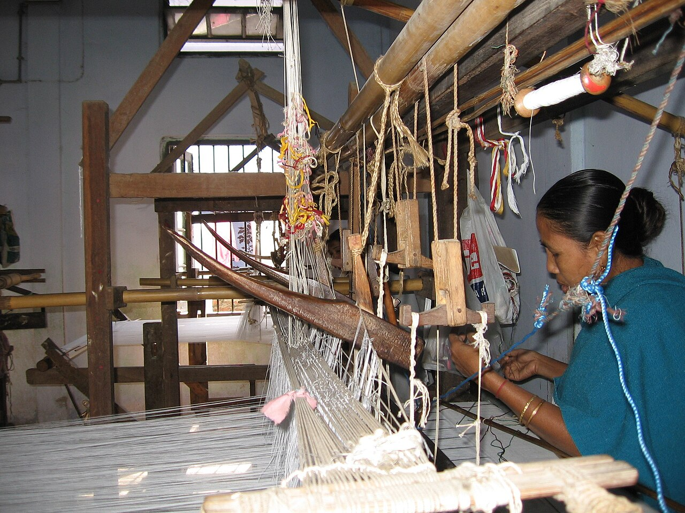
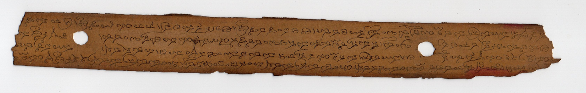

A word or recording
Pronunciation, everyday phrases, songs, and speaker attribution.
An archive of India’s underrepresented languages: words, voices, scripts and photographs, shared with community consent.
Mishing: awaiting verification from community speakers
English: “The loom remembers the river’s old name.”

মিশিং MishingOne word across the archive · eight sourced scripts & Koda
Discover underrepresented scripts, oral narratives, and regional vocabularies linked to real geographies.
Preserve community-cleared books, manuscripts, portraits, and recordings with explicit rights attribution.
Contribute corrections, photographs, and speech records through consent-checked archival moderation.


Featured Specimen · Coastal Dravidian
Spoken across Dakshina Kannada, Udupi, and northern Kasaragod, Tulu preserves centuries of sung paddana oral histories alongside historical Tigalari palm-leaf manuscripts.
Because Tigalari lacks universal operating-system font coverage today, BhashaVerse renders verified Kannada-script specimens while preserving manuscript plates directly.

Plate: Talegari folio · Ananda Devaraj (CC BY-SA 4.0)
Community speakers, families, and local researchers help keep this archive accurate and accountable.
Pronunciation, everyday phrases, songs, and speaker attribution.
Manuscript plates, craft textiles, places, and portraits with clear consent.
Oral memories, spelling fixes, or source updates on existing entries.
1. Submit 2. Reviewed with the community 3. Published with credit